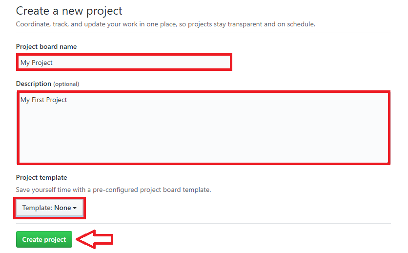

プロジェクトを作成してみましょう。GitHub上のリポジトリページを表示し「Projects」タブをクリックします。
プロジェクトを1つも作成していない場合、以下のような表示になります。「Create a project」をクリックします。
プロジェクト作成ページが表示されます。Project board nameにプロジェクトの名前を、Descriptionにプロジェクトの説明を、Project templateはテンプレートを選択し、「Create project」をクリックします。
プロジェクト作成が完了すると、今回作成したプロジェクトのページが表示されます。
カラムの数や名称は、プロジェクトのワークフローに合わせて自由に設定できます。
今回は、「ToDo」（実行予定のタスク）と「Done」（完了したタスク）の2つのカラムを作成してみます。
プロジェクト作成直後の場合、カラムは1つも存在しません。「Add a column」をクリックしてカラムを作成しましょう。
1つ目のカラム名「ToDo」を入力し、「Create column」をクリックします。
カラム「ToDo」が追加されました。同様の操作でカラム「Done」を追加しましょう。
カラム「Done」が追加されました。
カラムの準備ができましたので「カード」を追加してみましょう。
カードを追加するにはカラムの右上の「＋」ボタンをクリックします。ここではカラム「Todo」にカードを追加してみます。
カラムの上部にテキストボックスが表示されるので、タスクの内容を記入し、「Add」をクリックします。

カードが追加されました。
カラムに追加したカードは別のカラムへ移動できます。
今回のようにカードのステータスごとにカラムを作成した場合、カードを移動することでカードのステータスを更新できます。
カードを移動するには、移動したいカードを移動先のカラムへドラッグ＆ドロップします。
カードがカラム「Done」へ移動しました。
1つのカラム内にカードが複数ある場合、カラム内でドラッグ＆ドロップすると、カードの順序を入れ替えることができます。
イシュー（プルリクエスト）をカラムに追加することもできます。追加するには「Add cards」をクリックします。
イシュー（プルリクエスト）の一覧が右側に表示されるので、追加したいイシュー（プルリクエスト）を追加先のカラムへドラッグ＆ドロップします。
イシュー（プルリクエスト）がカラム「Done」に追加されました。追加したイシューやプルリクエストは、通常のカードと同様に、カラムの移動などの操作ができます。